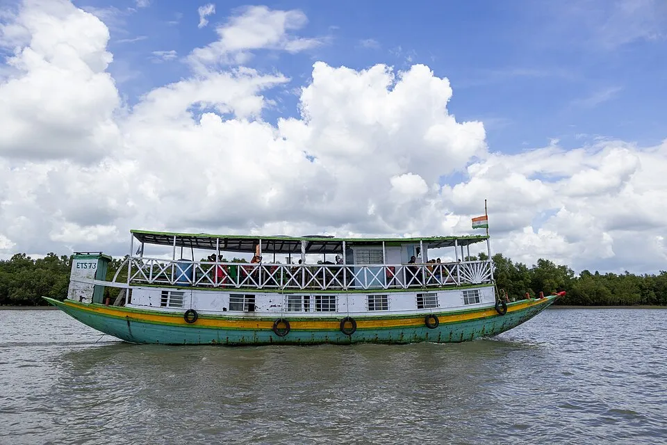

Region · Mangrove forest
Sundarbans
The world's largest mangrove forest, reached only by boat — a slow, quiet world of tidal channels, watchtowers and the occasional heart-stopping wildlife sighting.

The Sundarbans isn't a place you drop into for an afternoon — it's a multi-day boat trip, almost always run out of Khulna or Mongla. You sleep on the boat, wake in the mangroves, and let the operator handle the permits, guide and forest fees that a visit here requires. That bundle is why it's the priciest single leg for most travellers — and, for many, the most memorable.
What a cruise looks like
- Dawn creek safaris. Small boats slip up the narrow channels at first light — the best window for wildlife, from deer and crocodiles to, if you're very lucky, a tiger's pugmark on a mudbank.
- Watchtowers. Stops at Karamjal or Kotka to walk boardwalks above the mud and take in the scale of the forest.
- Village & forest edge. A visit to a community living on the fringe of the world's largest mangrove system.
How long to plan
Three days is the standard cruise and the realistic minimum — one day to reach Khulna and board, one deep in the forest, one to cruise back. Longer cruises reach quieter, wilder sections.
Getting there
Reach Khulna from Dhaka by overnight bus or train (roughly 7–9 hours), then join your tour from there. Booking a reputable operator in advance is strongly recommended — this is not a DIY leg.
Season matters here. The cool, dry months (roughly November to February) are the classic window. Wildlife, comfort and boat availability all shift with the season, so build your dates around it.
Price a Sundarbans cruise
Opens the planner with Dhaka + Sundarbans.